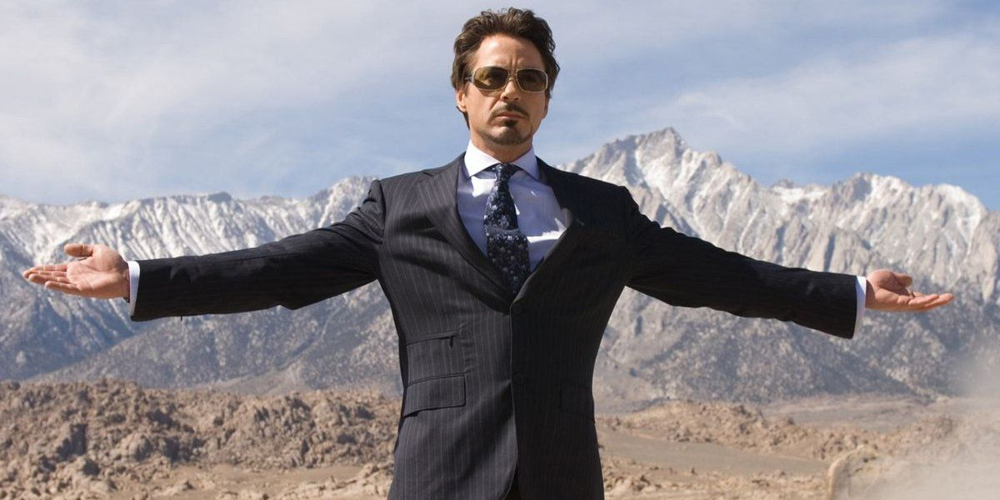

Robert John Downey Jr. is an American actor and producer. His career has been characterized by critical and popular success in his youth, followed by a period of substance abuse and legal troubles, before a resurgence of commercial success later in his career.

Downey was born in Manhattan, New York City, the younger of two children. His father, Robert Downey Sr., was
an
actor and filmmaker, while his mother, Elsie Ann (née Ford), was an actress who appeared in Downey Sr.'s
films. Downey's father was of half Lithuanian Jewish, one-quarter Hungarian Jewish, and
one-quarter Irish descent, while Downey's mother had Scottish, German, and
Swiss ancestry.
Robert's original family name was Elias which was changed by his father to enlist in the Army. Downey and
his older sister Allyson grew up in Greenwich Village.[14]
As a child, Downey was "surrounded by drugs." His father, a drug addict, allowed Downey to use marijuana at
age
six, an incident which his father later said he regretted.[14] Downey later stated that drug use
became an
emotional bond between him and his father: "When my dad and I would do drugs together, it was like him
trying to
express his love for me in the only way he knew how." Eventually, Downey began spending every night abusing
alcohol and "making a thousand phone calls in pursuit of drugs".[15][16]
During his childhood, Downey had minor roles in his father's films. He made his acting debut at the age of
five,
playing a sick puppy in the absurdist comedy Pound (1970), and then at seven appeared in the surrealist
Western
Greaser's Palace (1972).[11] At the age of 10, he was living in England and studied classical
ballet
as part of
a larger curriculum.[17][18] He attended the Stagedoor Manor Performing Arts Training
Center in upstate New York
as a teenager. When his parents divorced in 1978, Downey moved to California with his father, but in 1982,
he
dropped out of Santa Monica High School, and moved back to New York to pursue an acting career full-time.
Downey started dating actress Sarah Jessica Parker in 1984 after meeting her on the set of Firstborn. The
couple
later separated in 1991 due to his drug addiction.[124]
He married actress and singer Deborah Falconer on May 29, 1992, after a 42-day courtship.[125]
Their son,
Indio
Falconer Downey, was born in September 1993.[126] The strain on their marriage from Downey's
repeated trips
to
rehab and jail finally reached a breaking point; in 2001, in the midst of Downey's last arrest and
sentencing to
an extended stay in rehab, Falconer left Downey and took their son with her.[125] Downey and
Falconer
finalized
their divorce on April 26, 2004.
Downey with wife Susan Downey at the 2010 Academy Awards
In 2003, Downey met producer Susan Downey (née Levin), an Executive Vice President of Production at Joel
Silver's film company, Silver Pictures on the set of Gothika.[4] Though Susan twice turned down
his amorous
advances, she and Downey did quietly strike up a romance during production.[127] Despite Susan's
worries
that
the romance would not last after the completion of shooting because "he's an actor; I have a real
job",[127]
the
couple's relationship continued after production wrapped on Gothika, and Downey proposed to Susan on the
night
before her thirtieth birthday.[127] In August 2005, the couple were married, in a Jewish
ceremony, at
Amagansett, New York.[128][129] A tattoo on one of his biceps reads "Suzie Q" in
tribute to her.[130] The
Downeys’ first child, a son named Exton Elias, was born in February 2012,[131] and their second,
a daughter
named Avri Roel, was born in November 2014.
Downey Jr. made his debut as an actor at the age of five in the film Pound (1970), written and directed by
his
father, Robert Downey Sr.. He built his film repertoire throughout the 1980s and 1990s with roles in Tuff
Turf
(1985), Weird Science (1985), True Believer (1989), and Wonder Boys (2000) among many others. In 1992,
Downey
received an Academy Award nomination and won the BAFTA (British Academy Award) for Best Actor for his
performance in the title role of Chaplin (1992).
In Robert Altman's Short Cuts (1993), he appeared as an aspiring film make-up artist whose best friend
commits
murder. In Oliver Stone's Natural Born Killers (1994), with Woody Harrelson and Juliette Lewis, Downey
starred
as a tabloid TV journalist who exploits a murderous couple's killing spree to boost his ratings. For the
comedy
Heart and Souls (1993), Downey starred as a young man with a special relationship with four ghosts. In 1995,
Downey starred in Restoration (1995), with Hugh Grant, Meg Ryan and Ian McKellen, directed by Michael
Hoffman.
Also that year, he starred in Richard III (1995), in which he appears opposite his Restoration (1995)
co-star
McKellen.
In 1997, Downey was seen in Robert Altman's The Gingerbread Man (1998), alongside Kenneth Branagh, Daryl
Hannah
and Embeth Davidtz; in One Night Stand (1997), directed by Mike Figgis and starring Wesley Snipes and
Nastassja
Kinski; and in Hugo Pool (1997), directed by his father, Robert Downey Sr. and starring Sean Penn and
Patrick
Dempsey. In September of 1999, Downey appeared in Black & White (1999), written and directed by James
Toback,
along with Ben Stiller, Elijah Wood, Gaby Hoffmann, Brooke Shields and Claudia Schiffer. In January of 1999,
he
starred with Annette Bening and Aidan Quinn in In Dreams (1999), directed by Neil Jordan.
In 2000, Downey co-starred with Michael Douglas and Tobey Maguire in Wonder Boys (2000), directed by Curtis
Hanson. In this dramatic comedy, Downey played the role of a bisexual literary agent. In 2001, Downey made
his
prime-time television debut when he joined the cast of the Fox-TV series Ally McBeal (1997) as attorney
"Larry
Paul". For this role, he won the Golden Globe Award for Best Performance by an Actor in a Supporting Role in
a
Series, Mini-Series or Motion Picture Made for Television, as well as the Screen Actors Guild Award for
Outstanding Performance by a Male in a Comedy Series. In addition, Downey was nominated for an Emmy for
Outstanding Supporting Actor in a Comedy Series.
The actor's drug-related problems escalated from 1996 to 2001, leading to arrests, rehab visits and
incarcerations, and he was eventually fired from Ally McBeal (1997). Emerging clean and sober in 2003,
Downey
Jr. began to rebuild his career.
He marked his debut into music with his debut album, titled "The Futurist", on the Sony Classics Label on
November 23rd, 2004. The album's eight original songs, that Downey wrote, and his two musical numbers
debuting
as cover songs revealed his sultry singing voice and his musical talents. Downey displayed his versatility
in
two different films in October 2003: the musical/drama The Singing Detective (2003), a remake of the BBC hit
of
the same name, and the thriller Gothika (2003) starring Halle Berry and Penélope Cruz. Downey starred in
powerful yet humbling roles inspired by real-life accounts of some of history's most precious kept secrets,
including Richard Linklater's A Scanner Darkly (2006) in 2006 co-starring Keanu Reeves, Winona Ryder and
Woody
Harrelson, and Fur: An Imaginary Portrait of Diane Arbus (2006) co-starring Nicole Kidman, a film inspired
by
the life of Diane Arbus, the revered photographer whose images captured attention in the early 1960s. These
roles exhibited Downey's momentum from the previous year of 2005, in which he starred in the Academy
Award®-nominated feature film Good Night, and Good Luck. (2005), directed by George Clooney and in Shane
Black's
action comedy Kiss Kiss Bang Bang (2005) co-starring Val Kilmer. In 2007, he co-starred in David Fincher's
suspenseful Zodiac (2007), alongside Jake Gyllenhaal and Mark Ruffalo, about the notorious serial killer who
haunted San Francisco during the 1970s.
In May 2008, Downey achieved critical acclaim and worldwide box office success for his starring role in Iron
Man
(2008), Jon Favreau's big-screen rendering of the Marvel comic book superhero. The film co-starred Gwyneth
Paltrow, Jeff Bridges and Terrence Howard. In August of 2008, Downey starred with Ben Stiller and Jack Black
in
the comedy Tropic Thunder (2008), and went on to receive an Academy Award®-nomination for Best Supporting
Actor
for his, Kirk Lazarus.
In December 2009, Downey starred in the action-adventure Sherlock Holmes (2009). The film, directed by Guy
Ritchie, co-starred Jude Law and Rachel McAdams and earned Downey a Golden Globe for Best Performance by an
Actor in a Motion Picture - Comedy or Musical in January of 2010. In early Summer 2010, Downey re-teamed
with
director Jon Favreau and reprised his role as "Tony Stark/Iron Man" in the hugely successful sequel to the
original film, Iron Man 2 (2010), starring Gwyneth Paltrow, Scarlett Johansson, Samuel L. Jackson and Mickey
Rourke.
Downey next starred in Due Date (2010), a comedy directed by Todd Phillips, in which he plays the role of an
expectant father on a road trip racing to get back in time for the birth of his first child. Due Date
(2010),
starring The Hangover (2009)'s Zach Galifianakis, was released in November 2010.
Downey was honored by Time Magazine's "Time 100" in 2008, an annual list of the 100 most influential people
in
the world. His laurels include two Academy Award nominations, three Golden Globe wins, numerous other award
nominations and wins, and tremendous popular and commercial success, particularly in his roles as Sherlock
Holmes and Tony Stark (the latter of which he has so far played in Iron Man (2008), Iron Man 2 (2010), The
Avengers (2012), Iron Man 3 (2013), and Avengers: Age of Ultron (2015). For three consecutive years, from
2012
to 2015, Downey has topped the Forbes list of Hollywood's highest-paid actors, making an estimated $80
million
in earnings between June 2014 and June 2015.